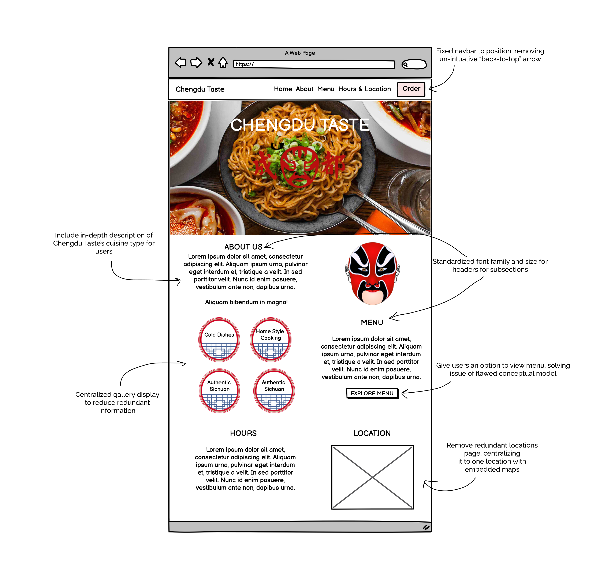
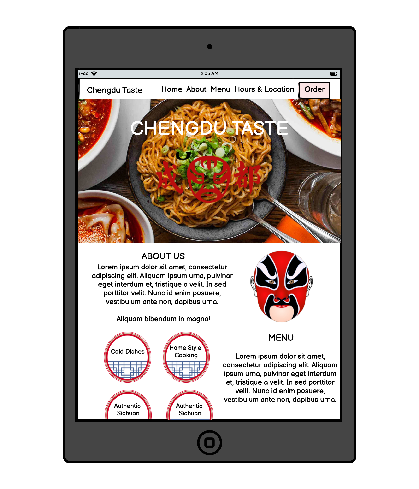
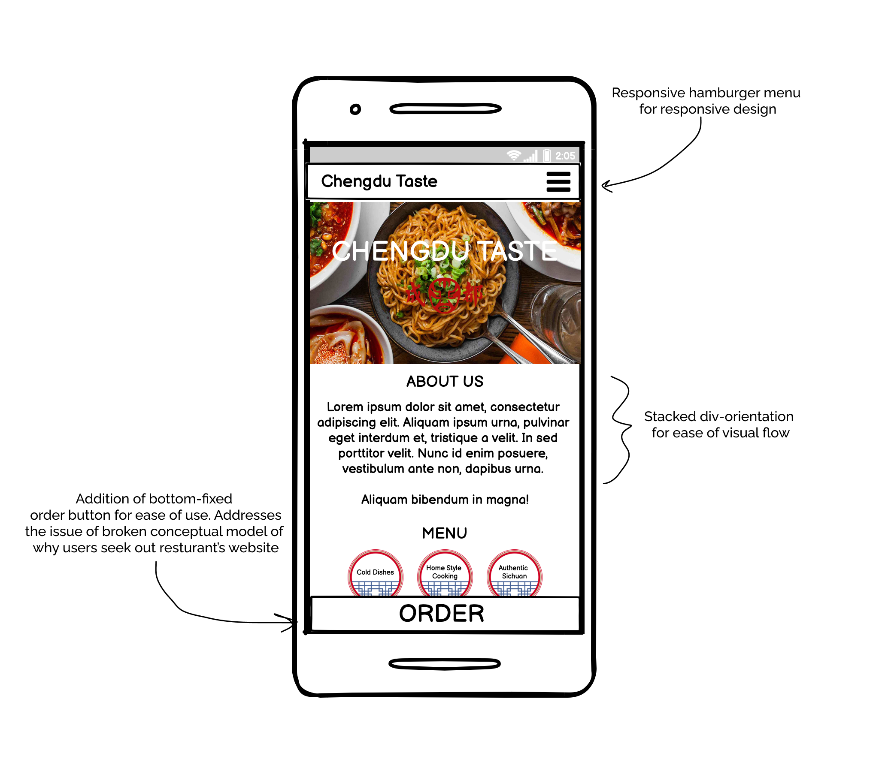
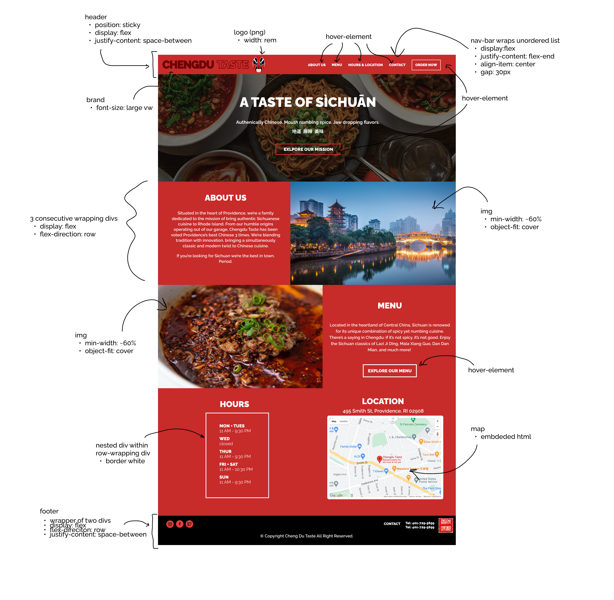
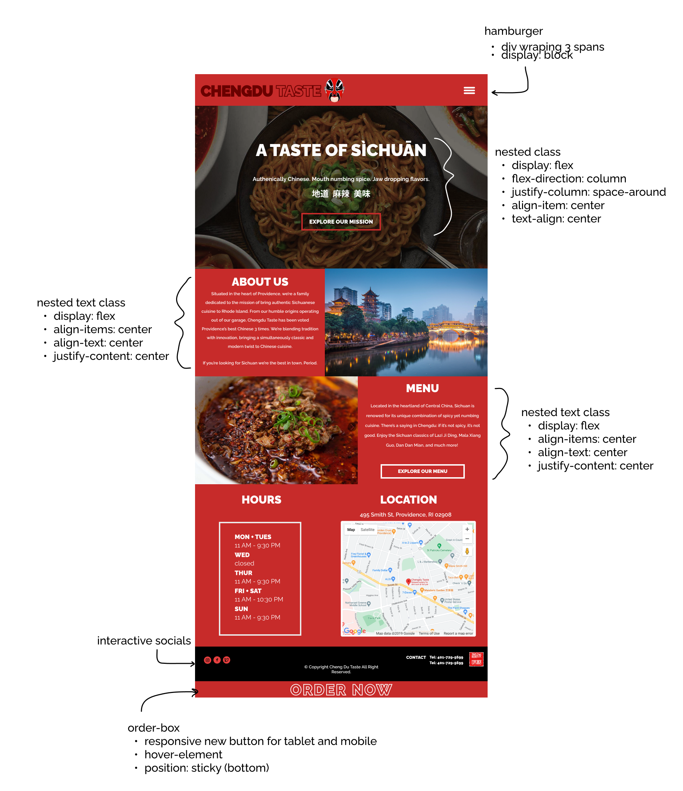
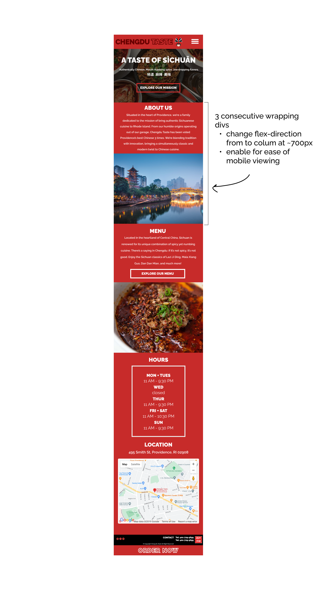
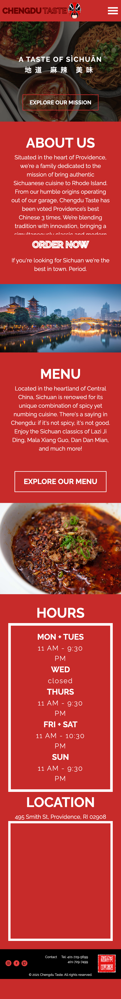
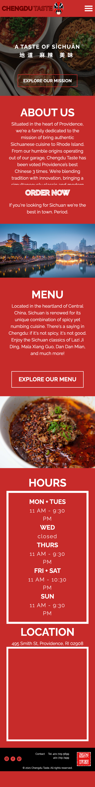

Introduction
Hey you! Yeah you, read this!
Gotcha! Within the first couple of seconds of landing on a website, users make a decision about whether
or not they like the site. Put simply, if they don't like it, they leave. If they do like it, they stay.
The first impression is and always will be the most important impression.
In our increasingly internet centric world, it is more important than ever to make a good first impression.
As consumer experience shifts digital, from shopping malls to online stores, websites have become the new symbolic storefronts.
If this analogy is true, then the first click is the new window display. As a case study for this topic, I will be analyzing the
pre-existing pitfalls of the website for a local Providence restaurant, Chengdu Taste,
and redesigning it to be more user friendly. The redesign process will be entirely holistic, identifiying usability issues, adapting both lo
and hifi wireframes, and finally implementing a responsive design.
Identifying Usability Problems
For context, Chengdu Taste is a Chinese resturant located in Providence, Rhode Island that specializes in Sichuan cuisine.
Think red hot, chilli laced, numbing spice. As a student who attends Brown University nearby, Chengdu Taste certainly has been
a valuable instition that has gotten me through some tough times! These are just two reasons, of many more, why I chose Chengdu Taste for my case study.
Here's a screenshot of the current website along with a link to it: https://chengdutasteonline.com

Existing Issues
Usability
- Non-existent link or direction to menu of resturant, which certainly defeats the purpose of a resturant website
- Two galleries exist on the bottom of the page versus a dedicated page for the gallery
- “Enjoy our food” section has overlapping UI for photos, the slider is not contained in the photos
- Photos on the gallery, when hovered over, are set to a default null photo description
- Inconsistent font family and colors for visual cleanliness
- Upper nav-bar is not fixed in position, leading to inability for users to access different sections while on the lower-half of the page
Learnability
- Inconsistency in format for new section headers (Directions v.s Enjoy our food) leading to unclear visual hierarchy
- Phone numbers are hyperlinked twice, leading to potential confusion over which is accurate
- Redundancy of multiple galleries, in differing formats on the same page, may cause users to be unsure of which is accurate
Memorability
- Confusion regarding redundant "Gallery" and "Direction" pages when information is present on home page
- The Direction/Gallery tab do not scroll down to the section header but instead opens a new page
- Despite the navbar not being fixed, the interactive “back-to-top” arrow is small, unimposing, and is not intuitive with its intended usage
- Lack of a menu on website will lead potential customers to have to either recall desired items or search else-where (i.e Yelp, Google) for menu photos
Conceptual Model
- Lack of menu runs contradictory to conceptual model of online ordering
- Lack of description of restaurant's type of cuisine, potentially driving off new customers
Accessibility
On the accessibility end, utilizing WebAIM WAVE, the Chengdu Taste website does not have any alternative text for its photos. Additionally, there are issues with certain text headers having low contrast with the chosen background color. While it may seem rather pedantic, the issues analyzed by WebAIM Wave demonstrate that Chengdu Taste’s website is not necessarily accessible to all potential users (i.e color-blind, hard of hearing), which is pre-emptively minimizing the market for Chengdu Taste.
Visual Redesign
In order to address the aforementioned issues, I've created low-fidelity wireframes, a visual design style guide, and high-fidelity prototypes to iteratively improve on the website's design.
Low-fidelity wireframes
  Visual Design Style Guide

High-Fidelity Prototyping
  Responsive Redesign
And...here's the final result! Below is a screenshot of both a desktop and mobile version of the redesign along with a link.
 
